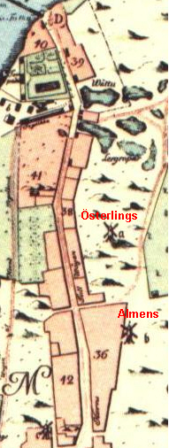
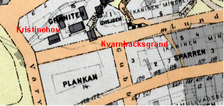
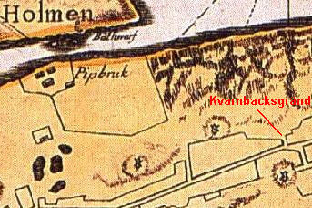
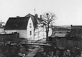
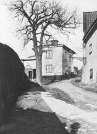
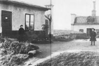

Södermalm i tid och rum. Stockholm
Kvarnbacksgränden
|
 1731 |
Uppe på Gubbhusberget - så kallades den bergsknalle där nu Skinnarviksringen slår sin slinga av lyxvillor
och funkishus - svängde en gång två väderkvarnar sina vingar, Österlings kvarn hette den ena och Almens
kvarn den andra. Till kvarngårdarna där uppe ledde från Hornstullsgatan nedanför (senare Brännkyrkagatan)
den branta Kvarnbacksgränden, strax öster om nuvarande Kristinehovsgatan. Vid
krönet av gränden låg vid Lundagatan 114 "Sparvhemmet" eller mer officiellt Maria barnhärbärge. Erik Asklund i En kille från Hornstull, 1968: "Ack, dessa ensamma träd, lutande mellan höga brandgavlar eller sorgset slokande med grenarna över en gulrappad mur, sträckande kvistarna mot friheten, solen, ljuset. Man ser deras konturer mot brandgaveln under varma sommardagar, fritt dansande med sitt grenverks skuggspel över den avflagnade rappningen; man ser dem blomma, dofta, lysa och hör ett sprött fågelkvitter från deras toppkvistar; man ser dem gulna och brinna, vissna och falna under höstens tid. Och på senhösten och under vintern står de nakna och kala, svarta av regn, vita av frost och sover den långa sömnen i väntan på våren och lövsprickningen -"
|
|
 1922
|
 1751
|
|
  Kvarnbacksgränden söderut från Lundagatan år 1912. "Sparvhemmet" är här rivet. Kvarnbacksgränden söderut från Lundagatan år 1912. "Sparvhemmet" är här rivet.
|
  Kvarnbacksgränden norrut från Brännkyrkagatan år 1904. Längst upp till vänster ligger Kvarnbacksgränden norrut från Brännkyrkagatan år 1904. Längst upp till vänster ligger"Sparvhemmet". |
  Gård vid Maria barnhärbärge, "Sparvhemmet" på Lundagatan 114 vid krönet av Kvarnbacksgränden Gård vid Maria barnhärbärge, "Sparvhemmet" på Lundagatan 114 vid krönet av Kvarnbacksgränden
|